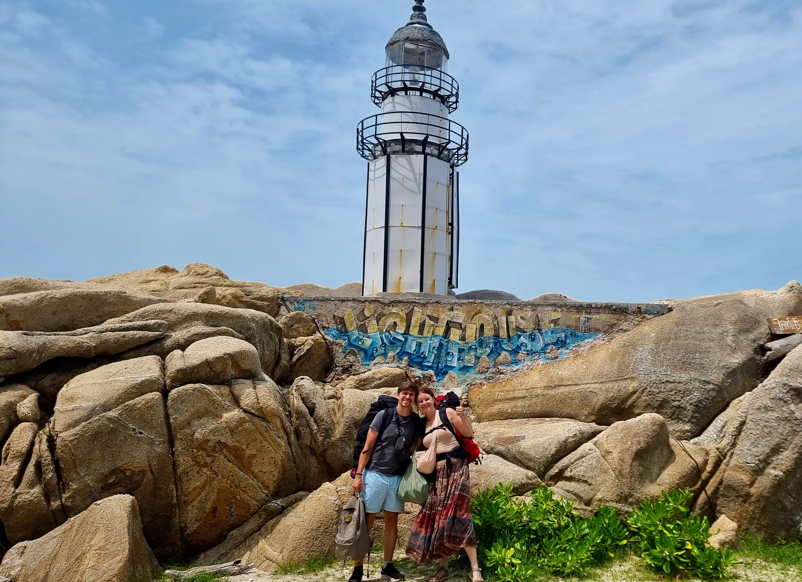
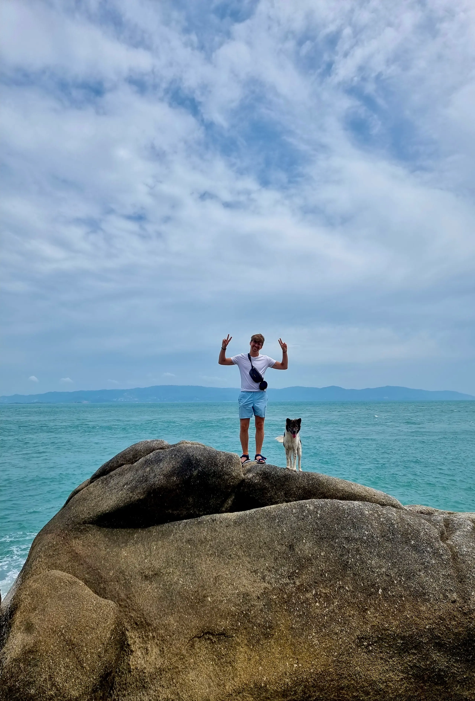
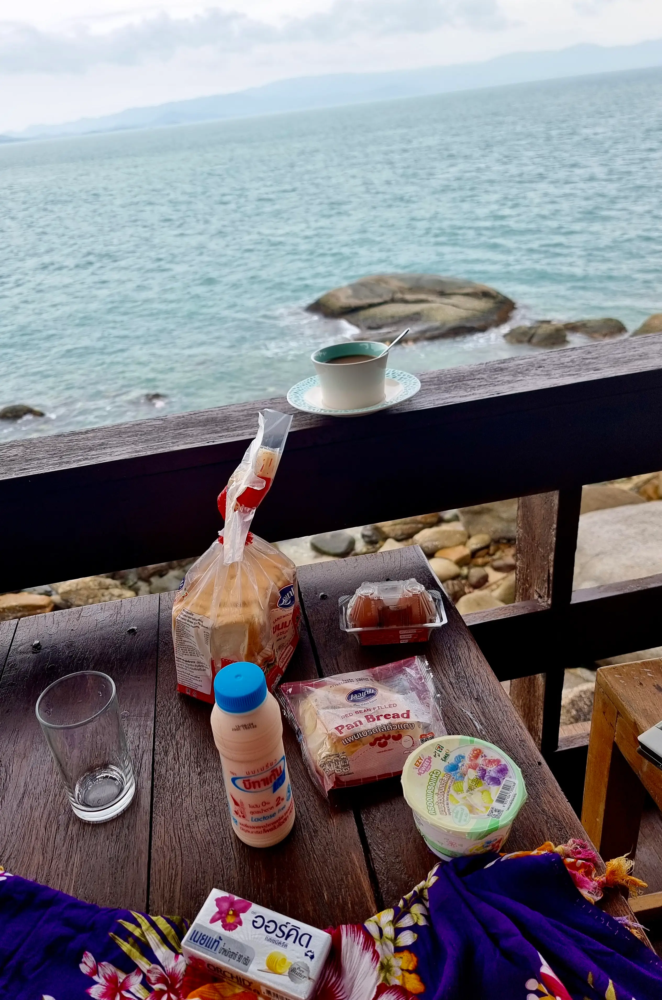
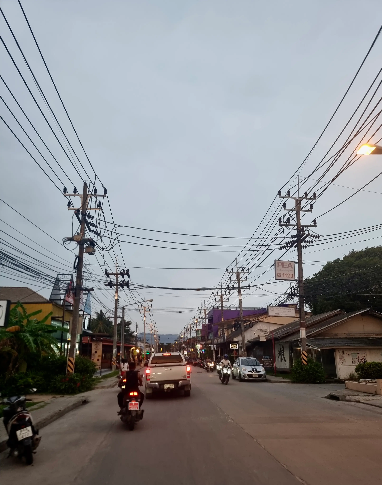
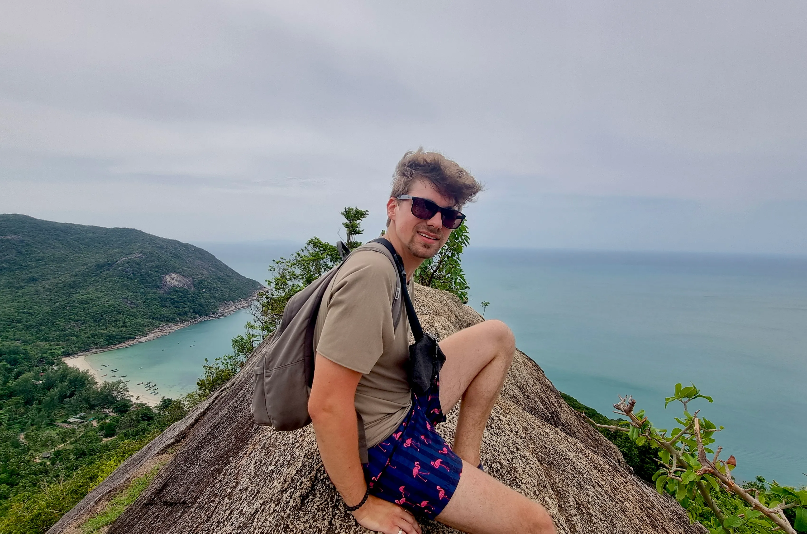
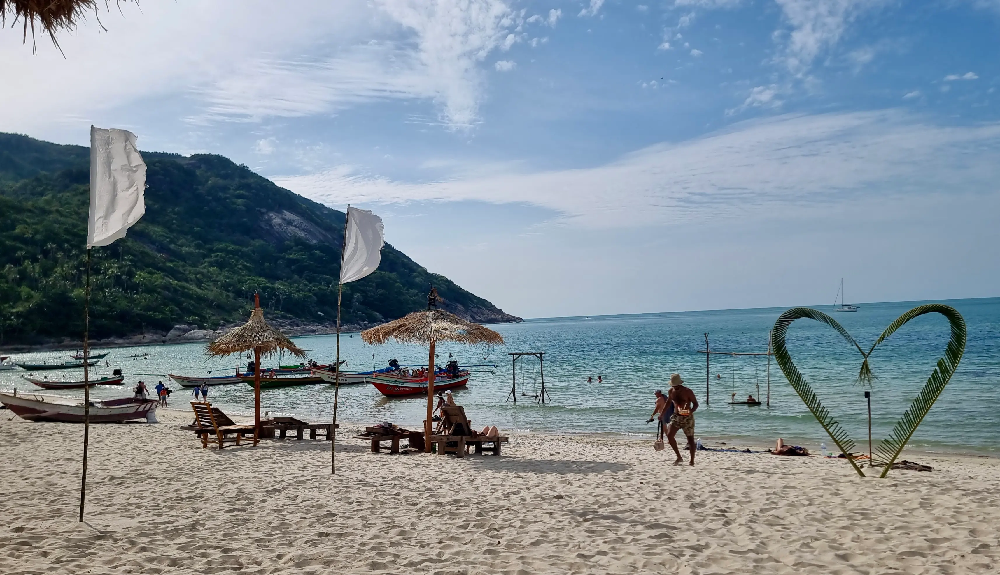
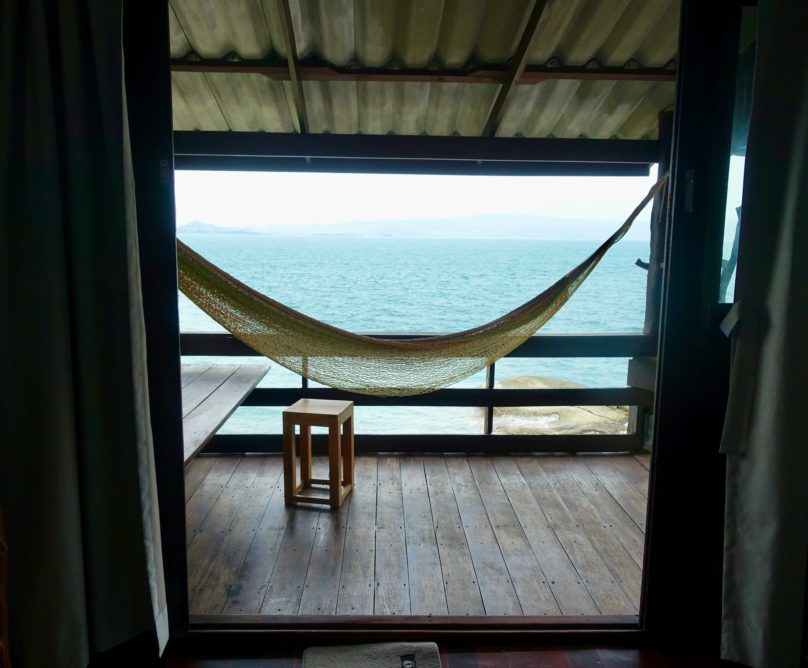
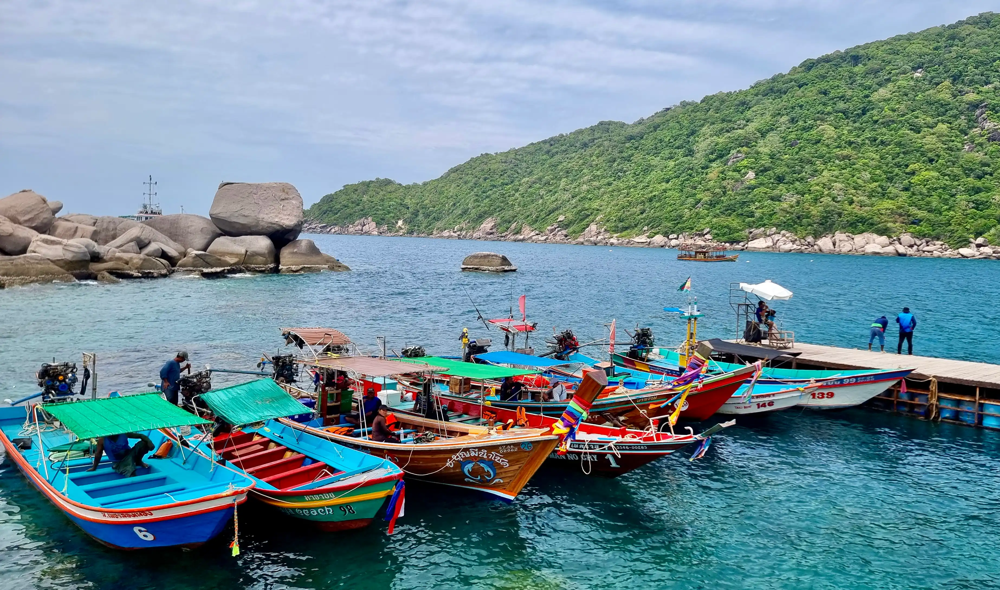
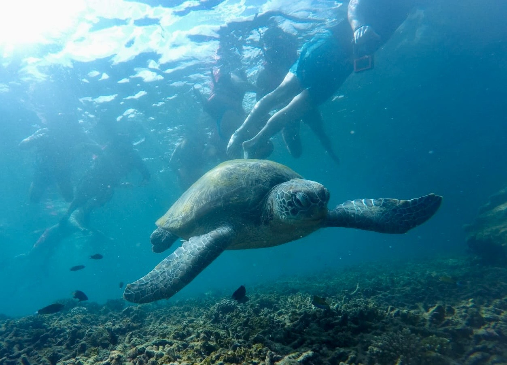
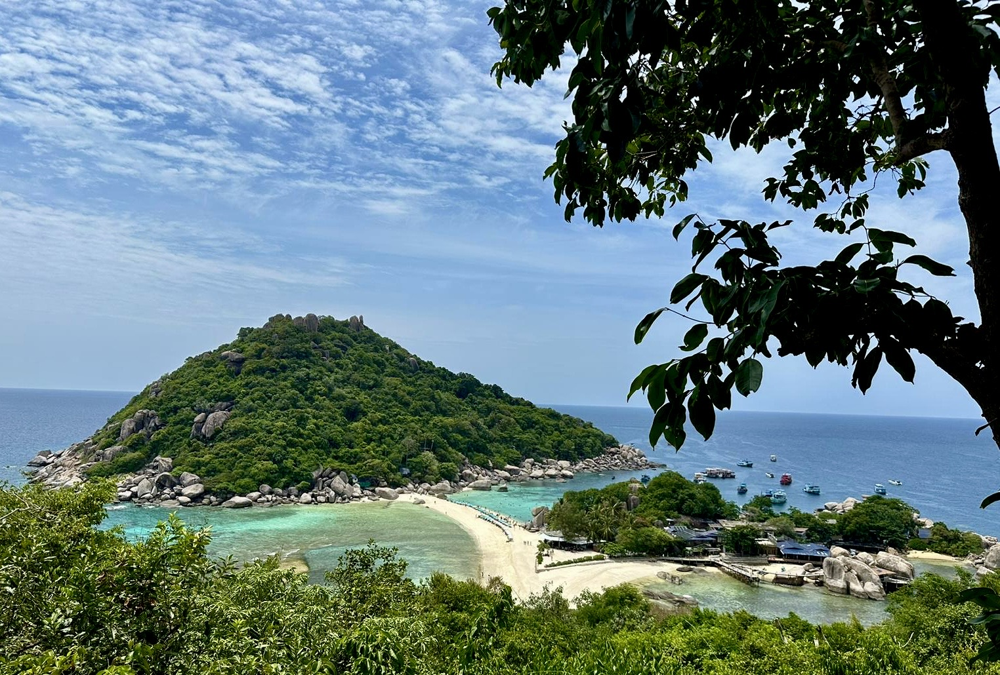

Früh geht es in einem überfüllten Van los vom Westen Thailands in den Osten auf die Insel Phangan. Sie ist die kleine Schwester von Samui und liegt im Golf von Thailand. Die Reise dorthin ist also lang und ein bisschen umständlich. Vom Van geht es in einen Bus, der so voll ist, dass eine Passagierin nicht mal einen Sitzplatz bekommt.
Warum der Bus so voll ist? Weil in drei Tagen die Full Moon Party ist. Eine weltweit berühmte Feier, die jeden Monat 20.000 bis 30.000 Gäste anzieht und sich am Strand von Haad Rin abspielt. Das lassen wir uns natürlich nicht entgehen.
Nach dem Bus geht es noch knapp drei Stunden auf die Fähre und dann muss hektisch mit den Taxifahrern verhandelt werden. Bianca, die auch auf Phangan ist, hatte uns bereits vorgewarnt, dass es hier teurer und stressiger ist. Letztendlich bezahlen wir 10 €, um in die Nähe unseres Hotels gebracht zu werden. Plus einen gratis Adrenalinkick, weil es hier Straßen gibt, die ein Gefälle von ungefähr 40 % haben, unsere Rucksäcke unbefestigt oben auf dem Dach liegen und es auch gerne mal Roller gibt, die mit 50 km/h überholt werden müssen.
Bis ganz zum Hotel können wir leider nicht gebracht werden, da man dafür über 100 Meter Holzsteg laufen muss, die in den Fels gearbeitet sind. Von unten spülen die Wellen an die Felsen, oben schleppen wir mit schwerem Gepäck über die Bretter, die auch schon mal bessere Tage gesehen haben.
Der aufwendige Weg lohnt sich allerdings. Wir haben ein eigenes Haus mit Balkon, der über den Wellen thront. Eine Hängematte ähnlich der, die wir uns gekauft haben, baumelt im Wind und aus den Wänden im Haus ragen ästhetisch Felsen. Es ist so mittelmäßig sauber, aber wir haben Wasser im Kühlschrank und ruhen uns erst mal aus.

Das heißt, wir gehen im Dunkeln den Weg zurück in den Ort - Haad Rin, der Ort, in dem in zwei Tagen die Party sein wird. Wir laufen 20 Minuten bis zum Strand und 15 Minuten bis zum 7-Eleven für das Frühstück morgen. EInen Teil des Weges werden wir von einer wilden hundedame begleitet, die mit uns den Holzssteg entlang läuft und Julius zeigt, wie man auf die Klippen vor unserm Hotel klettertn. Irgendwann verschwindet sie am Strand, und wir gehen in den Ort.
Gegessen wird in einem Restaurant mit einem anderen (sehr dickem) Hund und machen eine kurze Bestandsaufnahme von all den Bars und Weed-Shops, die es hier gibt. Mit Yakult, Toast, Gurken und süßem Brötchen bewaffnet laufen wir zurück zum Hotel.
Gefrühstückt wird auf dem Balkon mit Blick auf Samui. Es ist bewölkt, aber bei dem Blick stört das wenig. Wir lassen es entspannt angehen.

So verbringen wir den Vormittag auf dem Balkon in der Hängematte. Abends haben wir uns mit Bianca und Karim verabredet, das heißt wir brauchen auf jeden Fall einen Roller. Das erweist sich in Haad Rin als schwierig, denn die meisten Verleiher haben entweder kaum Bewertungen auf Google, schlechte Bewertungen oder gar keinen Eintrag.
Außerdem ist hier alles sehr, sehr touristisch. Es gibt viele Läden, die die gleichen billigen Klamotten anbieten, viele Bars, teures Essen und diverse Weed-Shops. Alles ist voller Weißer, die aussehen, als würden sie gerade aus dem Abi kommen und gerne den Ballermann besuchen. Von den entspannten Hippies wie in Pai sieht man wenige.
Auf der Suche nach einem Rollerverleih werden wir mehrere Male fast überfahren. Die Straßen sind eng, ohne Bürgersteige, und viele von den Touristen können nicht gut fahren. Pick-up-Trucks stört das alles nicht, die bremsen nicht für Menschenleben.
Endlich finden wir einen shady aussehenden Verleih. Ich sehe schon unsere Kaution am nächsten Tag flöten gehen, aber jetzt ist es eh zu spät und immerhin können wir aus diesem nervigen Ort weg. Wohin, das wissen wir selbst nicht so genau, aber erst mal raus.
Ähnlich wie auf Lanta gibt es hier eine lange Straße von der Hauptstadt mit Fähranleger, die an der Küste entlangführt und von Bars gesäumt ist. Organisch gewachsene, ursprüngliche Orte sieht man nicht. Wir fahren über Umwege zur Hauptstadt und dort, da es schon relativ spät ist, zum Abendessen auf den Markt.
Es gibt frittiertes Gemüse, frittierte Samosas und frittierte Sandwiches. Sowieso ist auf dem Markt irgendwie alles frittiert. Außerdem essen wir zum Nachtisch Mango Sticky Rice mit einer der besten Mangos, die ich bis jetzt gegessen habe, und Julius holt sich einen leckeren handgemachten Donut.

Wir essen den Nachtisch am Pier und beobachten einen sehr schönen Sonnenuntergang. Beim Gedanken daran, zurück nach Haad Rin zu fahren, kriege ich ein bisschen schlechte Laune, aber wir treffen uns erst in ein paar Stunden mit Bianca und Karim. Also fahren wir mit dem ächzenden Roller wieder die Berge hoch und runter. Man kann es sich in Deutschland wirklich nicht vorstellen, wie steil diese Straßen sind.
Wir schaffen es trotzdem heil bis zu dem Holzsteg und sehen nur zweimal, wie jemand fast überfahren wird.
Mit den beiden anderen gehen wir in einen kleinen Foodcourt beziehungsweise Markt mit Bar, der auf dem Weg in die Hauptstadt liegt. Es ist nett, wir unterhalten uns so lange, bis die Bar schließt, und haben viel Spaß. Karim und Bianca geben uns noch ein paar Tipps und sagen, dass es im Norden der Insel wohl wesentlich ruhiger und schöner ist als bei uns im Südzipfel.
Zurück auf dem Holzsteg werden wir Zeugen eines beeindruckend ekeligen Spektakels. In den Schatten zwischen unseren Taschenlampen tummeln sich Abertausende Termiten auf dem Holz, das uns davon abhält, in die Brandung zu fallen. Alles wimmelt: der Boden, die Geländer, die Stützen. Kleine ameisenähnliche Tiere krabbeln als schwarze Masse über das alte Holz.
Angeekelt laufen wir irgendwann weiter und ich weiß, dass mich diese Bilder irgendwann in meinen Albträumen noch einmal aufsuchen werden.
Der Morgen vom Full-Moon-Festival startet wie der letzte mit einem Frühstück mit Blick auf das Meer. Wir hören dem kleinen Vogel zu, von dem wir gestern aus Versehen das Nest entdeckt hatten, und packen dann Badesachen, um zum Bottle Beach zu fahren - einem abgelegenen Strand, den man, wie wir schmerzlich feststellen müssen, weder mit dem Roller noch mit Sandalen erreichen kann.
Das letzte Wegstück ist steil und die Straße ist nur ein rutschiger Schotterweg. Dennoch wagen sich einige Mutige mit ihren Rollern den Weg herunter. Der Wegesrand ist gesäumt von Reifen, Rollerleichen und Totenköpfen. Ein kleiner Scherz. Es sei denn ...
Mit einem Taxi mit Allradantrieb kommen wir am Strand an. Da Julius eine Strandallergie hat, ist die Laune nicht besonders, aber ich schaffe es, eine halbe Stunde zu lesen, bevor die Stimmung kurz davor ist zu kippen.
Wir packen unsere Sachen wieder ein und starten die Wanderung zum View Point. Erinnert ihr euch an die Mae Sa Wasserfälle? Oder an den Tiger Cave Tempel? Genau so ist das auch, bloß ohne Stufen und ohne Holzweg. Wir schlagen uns geradezu durch den Urwald. Meine hässlichen Latschen machen einen guten Job und tragen mich bis zur Spitze.
Nachdem wir den gesamten Weg x km durch den Wald gelaufen sind, ist es erschreckend zu sehen, wie hoch wir sind, als der Wald sich lichtet und wir auf die Felsen klettern, die den Viewpoint markieren. Zu beiden Seiten geht es steil hinunter ins Nichts. Die Windböen helfen nicht dabei, dass man sich sicherer fühlt.

Trotzdem traue ich mich, den schmalen Grat zu klettern, der einen auf einen größeren Felsen ganz an der Spitze des Berges führt. Von hier aus kann man die Bucht und die kleinen bunten Longboats sehen und auf der anderen Seite Meer, Berge und Urwälder. Die Aussicht ist atemberaubend und sogar noch besser dadurch, dass man den Aussichtspunkt praktisch nur mit Todesangst erklimmt.
Wieder am Strand angekommen, haben wir noch Zeit zum Baden. Wir schwimmen und spielen auf Schaumstoffmatten Kentern. Einmal schmeiße ich Julius ins Wasser, einmal schafft er es. Mit klebrigen, nassen Klamotten fahren wir zurück und haben gerade noch genug Zeit zum Vortrinken auf dem Zimmer, bevor wir uns ins Gemenge der Full Moon Party schmeißen.

Um erst mal sanft zu starten, gehen wir in eine Bar mit dickem Hund, die, in der wir bereits einmal gegessen haben. Wir streicheln den Hund und werden gewarnt, dass er beißt. Er schaut uns lieb an und zieht von dannen.
Dann bekommen wir die Spezialität vom Haad-Rin-Strand: einen Kinder-Eimer für Sandburgen, in dem eine Flasche thailändischen Rums ruht und eine Flasche Sprite oder Cola. Mit zwei bis zehn Plastikstrohhalmen und einer Kelle voll Eis ist das Getränk komplett. Außerdem bekommt man Schwarzlichtfarben gratis dazu.
Julius und ich sitzen in der Bar, schauen dem bunten Treiben unten auf der Straße zu und bemalen uns selbst und einander mit Blumen, Herzen und Ranken. Unsere Kleidung wird in Mitleidenschaft gezogen, aber die Farben leuchten schön.
Ordentlich angetrunken gehen wir in Richtung Strand, durch schreiende Verkäuferinnen und Betrunkene. Auf dem Strand ist es eine einzige Masse an Menschen. Dort, wo noch gestern Abend Sitzsäcke aufgebaut waren und entspannte House-Musik lief, drängen sich Körper aneinander, die bemalt sind wie unsere eigenen.
Aus allen Ecken dröhnt Musik, mal Taylor Swift, mal Snoop Dogg, mal Techno-Beats. Wir tanzen, dann haben wir ein kleines Dance-Off Gruppe Inder. Man kann sich wegen der Lautstärke nicht hören, versteht sich aber trotzdem.
Wir drängen uns weiter zu unterschiedlichen Bars. Zwischendrin tanzen immer wieder Feuertänzer auf kleinen Podesten. Wer eine Spende gibt, wird mit auf das Podest geholt und darf Teil der Show werden. Ich lasse mir das natürlich nicht entgehen und schon sausen brennende Feuerbälle um mich herum. Nach viel zu kurzer Zeit greift der Ordner nach meiner Hand und zieht mich zurück in die Menge.
Julius und ich schauen uns weiter um, gehen an Ständen vorbei, die Gras in allen Formen verkaufen, neben Lachgas-Kanistern und getrockneten Magic Mushrooms. Wir tanzen mit einer Gruppe Deutscher und Julius fragt kurzerhand, ob er ein Selfie mit einem Polizisten machen kann, der mit Pistole im Halfter auf die tausenden Feiernden aufpasst.
Leider wird das Ganze zu schnell zu laut und viel. Um zwei Uhr laufen wir den Weg zurück zu unserer Unterkunft, am dunklen Strand entlang und über den knarrenden Holzsteg. Die bunte Neonfarbe spült der Abfluss hinunter und schon ist der Abend vorbei.
Der Tag danach ist langsam und entspannt. Ich liege lange in der Hängematte und im Bett, wir schauen Videos und trinken Bananenmilch und Yakult. Es gibt wieder ungetoastetes Brot und wir verlängern die Unterkunft um eine Nacht.
Der einzige Grund, dass wir das Hotel verlassen, ist, dass wir den Roller zurückgeben müssen. Anschließend lasse ich mich noch mal bei einer Thai-Massage für eine Stunde verwöhnen. Dicke Katzen saßen vor dem Laden, was ein Qualitätsmerkmal ist.

Wir essen leckeres israelisches Essen, wandern noch ein bisschen den Strand entlang, der erstaunlicherweise so aufgeräumt ist, dass niemand merken würde, dass gestern die größte Party Thailands hier abgehalten wurde.
Abends, als es schon fast dunkel wird, gehen wir bei unserem Hotel noch mal ins Meer. Das Wasser ist flach, also schwimmen wir nicht wirklich, sondern dümpeln eher im badewannenwarmen Wasser. Auf selbstgebauten Schaukeln trocknen wir ab und schauen auf das dunkle Meer.
Ich bin ein bisschen wehmütig, obwohl wir noch zwei weitere Nächte auf Phangan bleiben. Wir genießen die letzte Nacht beim Einschlafen zum Geräusch der Wellen.
Die nächste Unterkunft ist die beste des gesamten Urlaubs. Wir haben wieder eine eigene Hütte, diese hat allerdings eine Küche mit Gasherd und großem Kühlschrank.
Der Weg dahin, nach Haad Yao, war allerdings etwas aufwendig: Wir sind mit dem Taxi zur Hauptstadt gefahren, selbst wenn wir bis nach Haad Yao gebucht hatten. Leider zieht der Taxifahrer uns ab, gibt uns einen Teil des Geldes wieder und rauscht ab. Am Zielort sind wir trotzdem nicht.
Kurzerhand beschließen wir, einen Roller zu mieten. Ich lasse mir die Fußnägel lackieren, während Julius mit seinem Rucksack bepackt schon mal nach Haad Yao fährt. Als ich fertig bin, wartet er bereits auf einem Street Market auf mich, einen Wassermelonenshake in der Hand. Ich beäuge das Ding kritisch und trinke nur einen Schluck. Ich halte mich lieber an frittiertes Essen und klammere mich mit vollem Bauch und schwerem Rucksack an Julius, als wir 20 Minuten in zur Unterkunft fahren.
Hier sind die Orte kleine Verschnitte von Pai: Yoga-Shops drängen sich neben alternativen Bars und veganen Cafés an den Straßenrand. Dahinter wartet das Meer. Ich will unsere vier Nächte an der Klippe nicht missen, aber ich weiß auch sofort, dass mir die Insel wesentlich besser gefallen hätte, wenn wir von Anfang an im Norden gewesen wären.
Ich kann mir sofort vorstellen, in der Hütte mein Homeoffice aufzubauen und drei Monate hier zu wohnen. Meine acht Stunden absitzen, in der Mittagspause Suppe in einem der Shops am Strand essen und abends im Meer schwimmen. Ein neuer Traum war geboren. Unbedingt will ich es möglich machen, einmal in meinem Leben so zu leben, selbst wenn es nur für eine begrenzte Zeit ist.
Ich schaue nach schönen Bars, die wir besuchen können, und räume meinen Rucksack aus.
Leider macht uns der Wassermelonen-Shake einen Strich durch die Rechnung. Julius hat ihn nicht vertragen und muss sich übergeben. Ich besorge Medikamente und Kräcker vom 7 Eleven und mache Videos auf dem Laptop an, während Julius auf dem Bett hängt und auf meinem Schoß einschläft. Ich hoffe nur, dass wir morgen die Schnorchel-Tour nach Koh Tao machen können, die wir heute gebucht haben.
Die Schnorchel-Tour fällt nicht ins Wasser. Selbst wenn Julius' Bauch noch nicht wieder vollkommen fit ist, schaffen wir es. Das Motorboot ist randvoll gepackt und hat ordentlich Seegang.

Ich bewundere Julius dafür, dass er sich nichts anmerken lässt, selbst wenn zwei Mitglieder einer sehr anstrengenden Familie auf dem Boot auf eine Bank gelegt werden müssen, damit sie sich nicht auf uns alle übergeben.
Ich knie mich auf die Sitzbänke, um aus dem Boot die Wellen und die Gischt ansehen zu können und lasse meine Gedanken treiben. Dem Meer könnte ich stundenlang zuschauen.
Wir halten drei Mal zum Schnorcheln und jedes Mal halte ich Ausschau nach einer Tao, einer Schildkröte. Die soll es hier nämlich häufig geben, deswegen auch der Name der Insel.
Wir sehen auch ansonsten schöne Fische, selbst wenn ich sagen muss, dass die Vielfalt und Farbenpracht der Unterwasserwelt in Ägypten wesentlich beeindruckender war. Wir sehen große Skalare und einen dicken Kugelfisch, der so lang ist wie mein Unterarm.
Und dann, endlich, hören wir unseren Guide: „Sie ist hier! Die Schildkröte! Kommt her und haltet Abstand!“
Es ist ein riesiges Tier. Ich weiß nicht warum, aber ich habe sie mir wesentlich kleiner vorgestellt. Der Panzer ist über einen Meter lang und unser Guide sagt, dass sie mindestens 80 Jahre alt ist. Damit hat sie nicht mal die Hälfte ihres Lebens hinter sich.

Fasziniert beobachte ich sie, wie sie die Steine und Korallen abnagt, während zwei Fische ihren Kopf und Rücken putzen. Dann hält sie inne und stößt sich vom Boden ab, um zum Atmen aufzutauchen.
Einen Moment lang kommt sie dabei direkt auf mich zu und ich kann ihr in das alte Gesicht schauen.
Wir müssen viel zu schnell wieder zurück zum Boot, um pünktlich unser Mittag auf Koh Tao zu essen. Julius bekommt Reis ohne alles. Unsere Tischnachbarin, eine thailändische Mutter, die scheinbar besorgt ist und ihn aufpeppeln will, bietet ihm zwei Mal mitleidig Ananas und Wassermelone von ihrem Obstteller an. Dankend lehnt er ab.
Der letzte Stopp bringt uns zu einer winzigen, geschützten Insel, wo wir mal wieder einen Aussichtspunkt unter Schweiß besteigen. Nach einer weiteren Pause am Strand treten wir den Heimweg an.

Und jetzt endlich zu einer Bar und den Sonnenuntergang über dem Meer sehen! Hah, schön wär's.
Als wir mit dem Roller losfahren wollen zu einer Bar, die Bianca und Karim uns empfohlen hatten, sehen wir nach 100 Metern, dass wir einen Platten haben.
Ich will nicht zu sehr ins Detail gehen, aber es ist lang, anstrengend und chaotisch, abends nach sieben Uhr noch irgendwen zu finden, der das fixen kann. Letztendlich vertun wir unsere Chance auf einen Sonnenuntergang.
Der arme Julius braucht über eine Stunde mit dem Resultat, dass wir einen neuen Roller bekommen.
Im Dunkeln warte ich in einer Strandbar auf ihn. Ich weiß, mein Schicksal ist sehr schwer. Ich trinke dort den leckersten Cocktail: eine Abwandlung vom Old Fashioned.
Und zwar: Bourbon, Soda, einige Tropfen Angostura und ungefähr 2 cl Zimtlikör. Klingt weihnachtlich, ist aber köstlich.
Das Curry, das ich Julius bestellt hatte, kann er leider noch nicht essen, aber ein netter australischer Kellner packt es uns ein. So können wir es auf der ewig langen Fahrt morgen zurück nach Bangkok genießen.
Ein letztes Mal nehme ich Abschied vom Meer und will am liebsten gar nicht gehen.